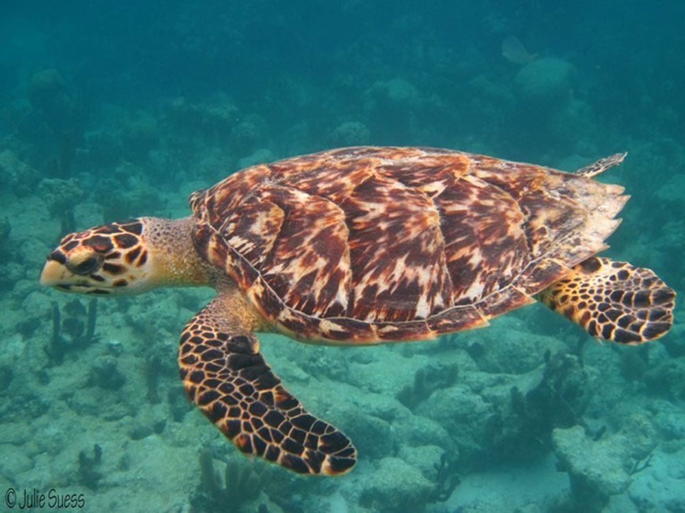
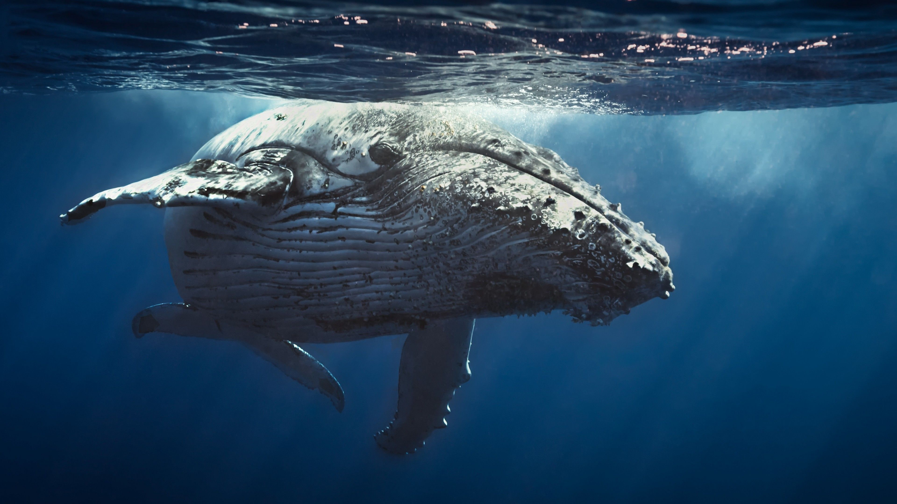

The Hawksbill Turtle is the most critically endangered of all Sea Turtle
species. Found within reefs of the Indo-Pacific and central Atlantic, they are easily recognised
by their distinctive shell and beak-like jaws.

During the industrial revolution whaling was big business, and Blue Whales
were hunted for their meat and blubber which was used in the production of oil, soap, perfume
and cosmetics.

The Sea Otter is one of the smallest endangered ocean species. If you’re
hoping to spot one of these cuties in the wild, they are most commonly found in California. Sea
Otters play a vital role in our ecosystem by feeding on sea urchins which help keep kelp forests
thriving.